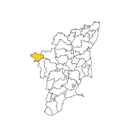

Ooty the Queen of Hill stations:Ooty, often hailed as the "Queen of Hill Stations," is a captivating destination nestled in the Nilgiri Hills of Tamil Nadu, India. Its enchanting landscapes, adorned with verdant valleys, cascading waterfalls, and sprawling tea plantations,cast a spell on visitors. The temperate climate, with cool summers and mild winters, adds to its allure. Ooty offers a delightful blend of natural wonders and colonial heritage, there are countless attractions to explore.

